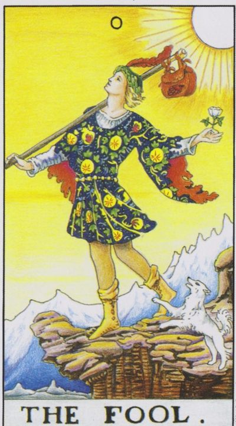
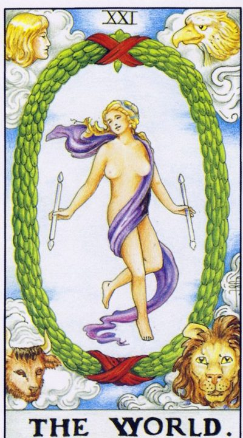

Колесо зодиака — это круг из 12 знаков, к которым система привязывает старшие арканы Таро через астрологические дома и планеты. Дурак (0) и Мир (XXI) стоят вне колеса — они обрамляют путь. Дурак — точка входа, ещё «ничего не начато»; Мир — завершение цикла, точка выхода. Между ними — 20 старших арканов по кругу. Нажми на знак, чтобы увидеть его аркан и описание. Крути колесо кнопками или сочетаниями.

Начало пути
Завершение циклаЭто обобщённое описание солнечного знака по системе пана Романа (соответствия Юрия Хана), а не полный портрет человека. В реальной натальной карте важны и другие факторы.